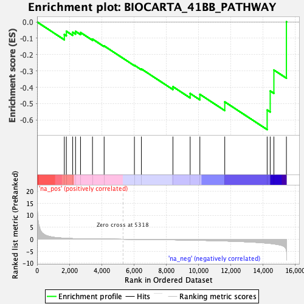
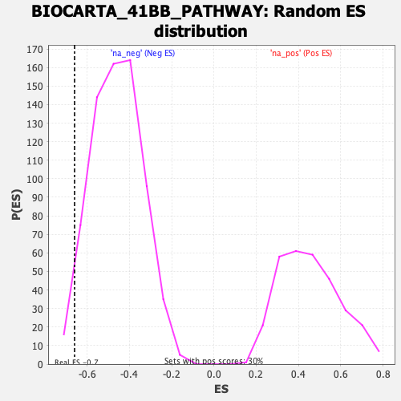

| | | Dataset | DE_genes |
| Phenotype | NoPhenotypeAvailable |
| Upregulated in class | na_neg |
| GeneSet | BIOCARTA_41BB_PATHWAY |
| Enrichment Score (ES) | -0.6595018 |
| Normalized Enrichment Score (NES) | -1.4351275 |
| Nominal p-value | 0.031563845 |
| FDR q-value | 0.29741532 |
| FWER p-Value | 1.0 |
Table: GSEA Results Summary

Fig 1: Enrichment plot: BIOCARTA_41BB_PATHWAY
Profile of the Running ES Score & Positions of GeneSet Members on the Rank Ordered List
| PROBE | GENE SYMBOL | GENE_TITLE | RANK IN GENE LIST | RANK METRIC SCORE | RUNNING ES | CORE ENRICHMENT | | 1 | CHUK | | | 1688 | 0.437 | -0.0771 | No |
| 2 | NFKB1 | | | 1815 | 0.385 | -0.0570 | No |
| 3 | MAP3K5 | | | 2207 | 0.264 | -0.0629 | No |
| 4 | IL4 | | | 2385 | 0.229 | -0.0575 | No |
| 5 | NFKBIA | | | 2692 | 0.177 | -0.0643 | No |
| 6 | MAP3K1 | | | 3435 | 0.105 | -0.1046 | No |
| 7 | MAPK14 | | | 4156 | 0.061 | -0.1467 | No |
| 8 | IFNG | | | 6033 | -0.041 | -0.2651 | No |
| 9 | RELA | | | 6467 | -0.071 | -0.2879 | No |
| 10 | IKBKB | | | 8421 | -0.242 | -0.3965 | No |
| 11 | ATF2 | | | 9489 | -0.372 | -0.4382 | No |
| 12 | TNFSF9 | | | 10091 | -0.460 | -0.4433 | No |
| 13 | TNFRSF9 | | | 11634 | -0.730 | -0.4895 | No |
| 14 | MAPK8 | | | 14262 | -1.636 | -0.5394 | Yes |
| 15 | MAP4K5 | | | 14451 | -1.753 | -0.4228 | Yes |
| 16 | TRAF2 | | | 14680 | -1.950 | -0.2944 | Yes |
| 17 | JUN | | | 15456 | -4.705 | 0.0010 | Yes |
Table: GSEA details [plain text format]

Fig 2: BIOCARTA_41BB_PATHWAY: Random ES distribution
Gene set null distribution of ES for BIOCARTA_41BB_PATHWAY